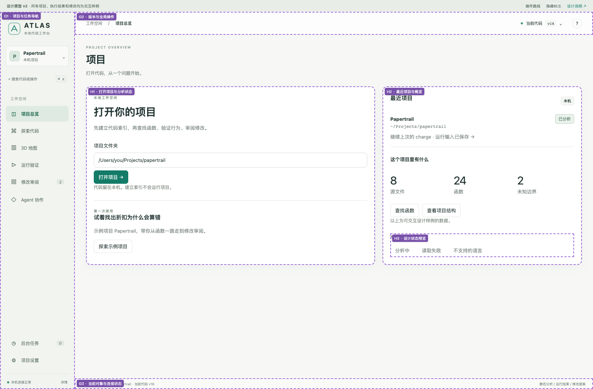
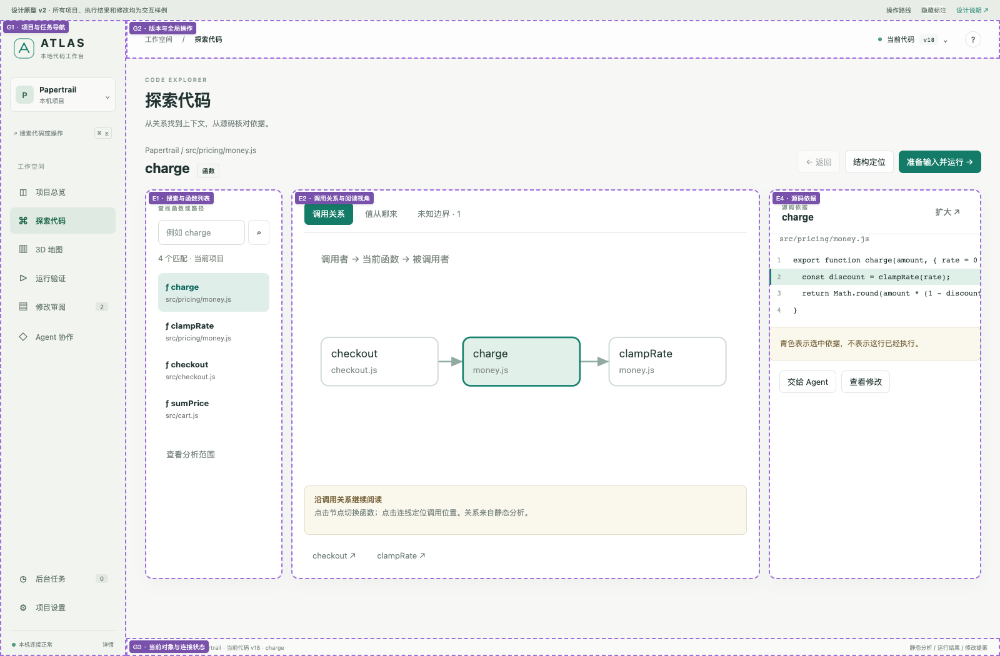
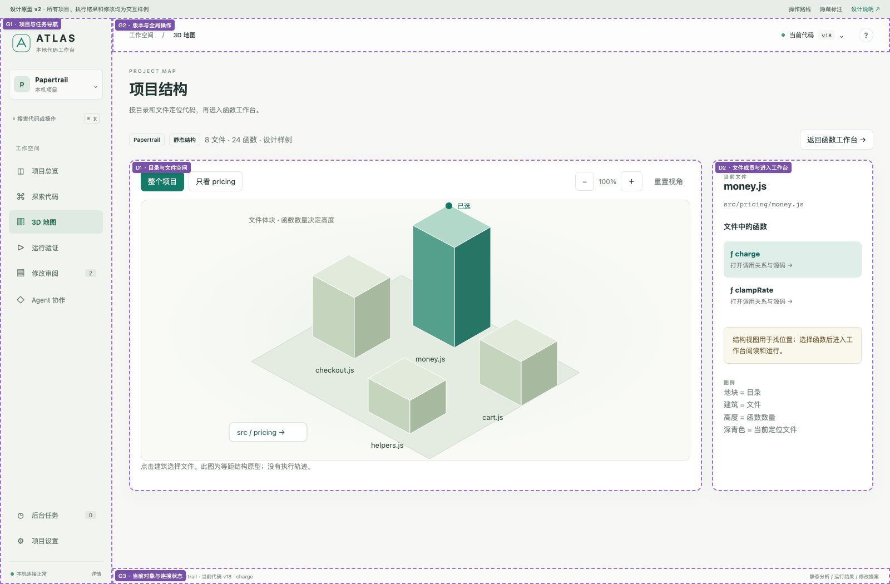
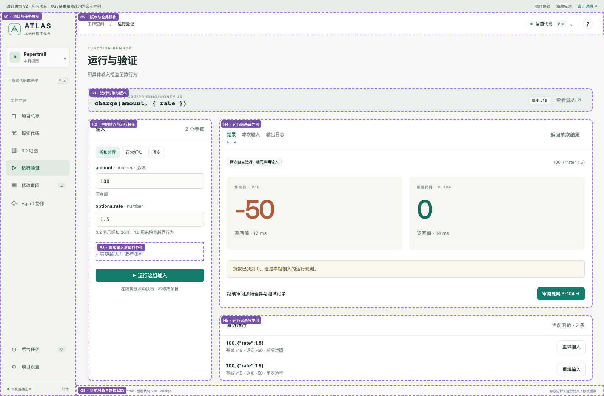
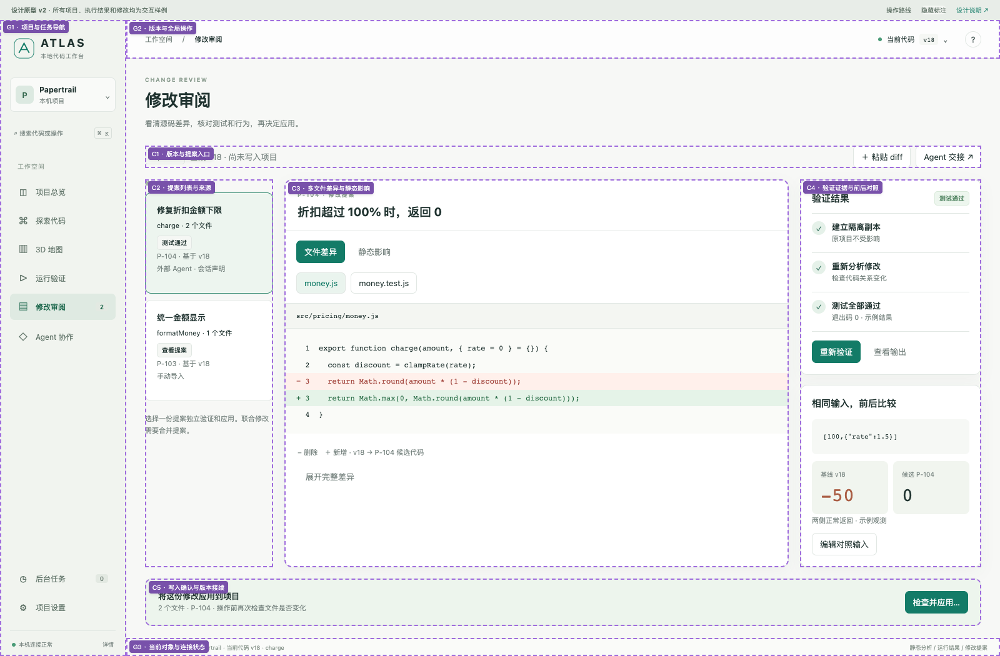
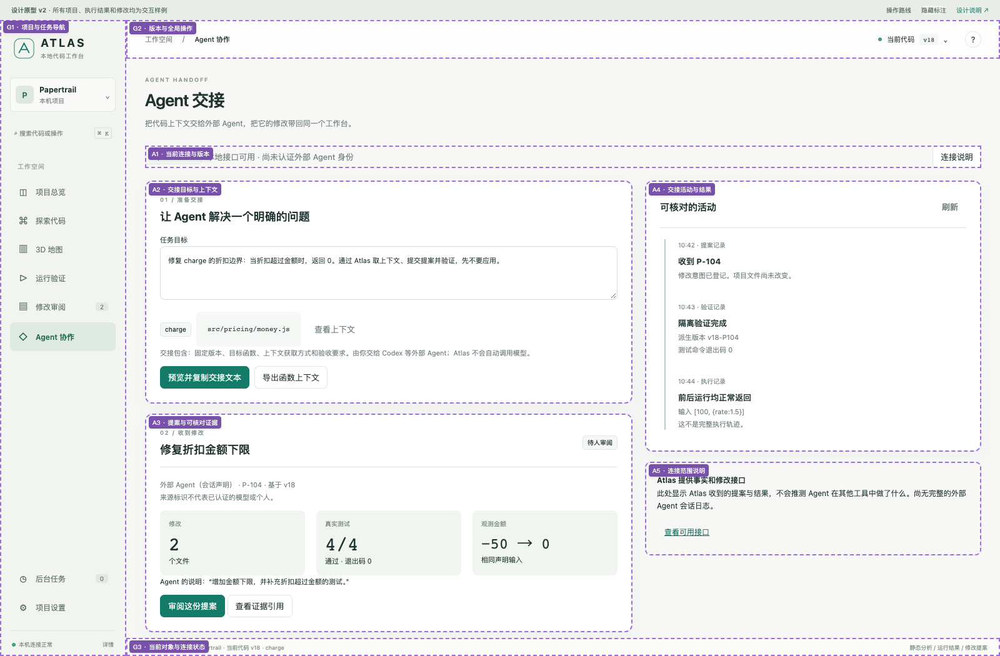

01 / 项目总览
H1 打开项目 · H2 最近项目 · H3 状态样例

H1 打开项目 · H2 最近项目 · H3 状态样例

E1 搜索 · E2 关系/来源/未知 · E4 源码

D1 目录与文件空间 · D2 函数入口

R1 对象 · R2 输入 · R4 结果 · R5 历史

C2 提案 · C3 差异 · C4 验证 · C5 应用

A2 交接 · A3 提案 · A4 可核对活动